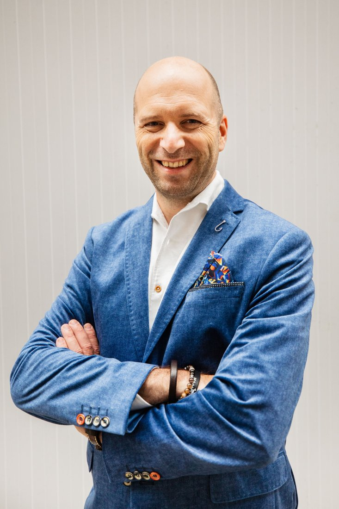

ADVIES
Meedenken over concept, boodschap en programma
Wat is het doel van het event, en wat moet er blijven hangen? We denken mee over de opbouw van het programma, de volgorde van sprekers en de overgang van inhoud naar ontmoeting.
Een event is ook communicatie. Wat wil je dat gasten na afloop onthouden, en hoe zorg je dat het programma dat ondersteunt? Maarten werkt al zo'n 25 jaar als corporate communicatiespecialist voor grote organisaties. Die ervaring zet hij in naast licht, geluid en muziek, zodat techniek en boodschap elkaar versterken.

Wat is het doel van het event, en wat moet er blijven hangen? We denken mee over de opbouw van het programma, de volgorde van sprekers en de overgang van inhoud naar ontmoeting.
Video en fotografie maken we samen met partners uit ons netwerk.
Communicatieadvies neem je af bij Maarten Versteeg communicatieadvies, los van de huur van licht en geluid via HEAR. Combineren kan en scheelt je tijd in de afstemming, want boodschap en techniek komen dan uit één hand. Het hoeft niet. Kies je voor beide, dan ontvang je twee aparte offertes.